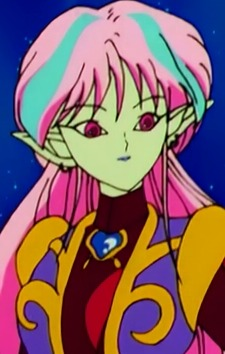
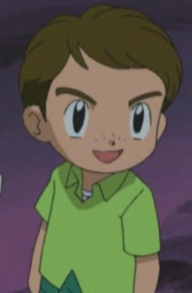
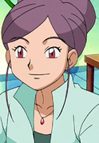
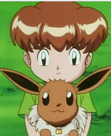
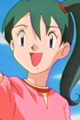
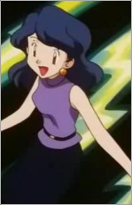

|  |
An |
|
An is an alien that came to Tokyo to revive the Makaiju Tree. She has a crush on Mamoru Chiba. She tries to constantly win over him. She and Ail are only survivors of their race. Her other persona is Natsumi Ginga. |
 |
Caroline |
- Pokemon Advanced Generations
|
Carolina is the mother of May and Max. She is also the wife of Noland. She is cheerful and positive woman but can be upset and suspicious. |
|  |
Keith |
- Pokemon Advanced Generations
|
Keith is a young Pokemon Trainer with a Clamperl. Keith lives on Island B, one of the A-B-C Islands. He attends school over on Island A. He has a rivalry with Nancy. |
|  |
Lila |
- Pokemon Diamond and Pearl
|
Lila is a renowned Pokemon Stylist and former Pokemon Coordinator from Celestic Town. She used to be a rival of Johanna. Lila is driven from talent, she was offered the chance to study abroad to become a Pokemon Stylist. She is a widely successful buisnesswomen who runs her own fashion store in Celestic Town and published her work in Poke Chic magazine. Despite her firm and confident attitude, Lila is very kind and generous. She treats her Pokemon with great care. |
|  |
Mikey |
|
Mikey is a young boy with an Eevee. He wants to keep his Eevee the way it is. He has three other brothers with one of the Eeveelution. |
|  |
Pietra |
|
Pietra is a Ground-type Pokemon Trainer. She is make tunnels to make it easier from her grandmother to travel with her bad ankle. She owns a Rhydon that knows a Water-Type move. |
|  |
Satsuki |
|
Satsuki is the oldest sister of the Kimono Sisters. Due to her being the oldest, she is the most talkactive one. She, like her other sister, are sincere and polite. |
 |
Spinel Sun |
- Cardcaptor Sakura
- Cardcaptor Sakura: Clear Card Prologue
- Cardcapter Sakura: Clear Card
|
Spinel Sun is the cat-like magical guardian created by Eriol Hiiragizawa as counter part to Kero-chan. His true form is a winged black panther, while his flase form is similar to a small winged cat. He spends most of time reading book and has a calm demeanor. He is a monster when he is fed sugar. Yumi Touma voiced Spinel Sun's false form. |
 |
Articuno |
- Pokemon Movie 2: The Power of One
|
Articuno is a legendary Pokemon from the Kanto region. Articuno, along with Zapdos and Moltres, is a member of three Legendary birds of Kanto. According to legend, it appears before doomed travelers lost in icey regions. |
 |
Eevee |
- Pokemon
- Pokemon: Pikachu's Rescue Adventure
|
Eevee is a Pokemon from Kanto region. Eevee is a quadruped creature with primarily brown fur. Eevee has an irregularly shaped genetic structure that allows it to adapt to many different kinds of environments. Yumi Touma voiced Sakura's Eevee. |
 |
Espeon |
- Pokemon
- Pokemon Chronicles
|
Espeon is a Pokemon from Johto region. Espeon is one of the Eevee evolve forms. The gem on Espeon's head boosts it's psychic powers to protects it's trainers. Yumi Touma voices Sakura's Espeon. |
 |
Jigglypuff |
|
Jigglypuff is a Pokemon from the kanto region. Jigglypuff is evolve form of Igglybuff. It's eye are mesmerize opponents and will inflate it lungs. It able to sing lullaby and makes people fall asleep. Yumi Touma voiced Marina's Jigglypuff. |


.jpg)